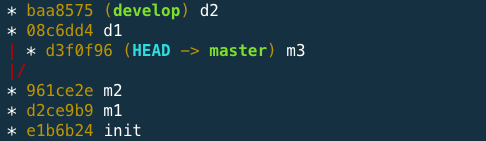
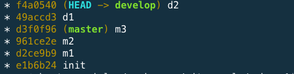
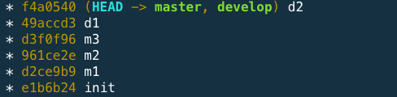
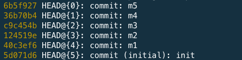
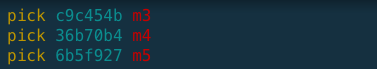
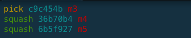
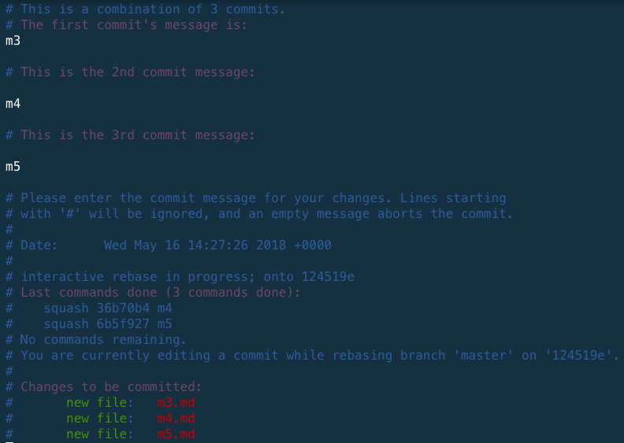
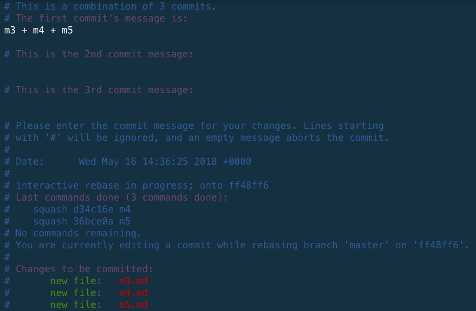
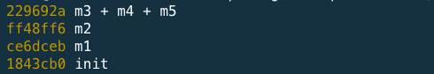

<!DOCTYPE HTML>
<html lang="" >
    <head>
        <meta charset="UTF-8">
        <meta content="text/html; charset=utf-8" http-equiv="Content-Type">
        <title>練習題 rebase · GitBook</title>
        <meta http-equiv="X-UA-Compatible" content="IE=edge" />
        <meta name="description" content="">
        <meta name="generator" content="GitBook 3.2.3">
        
        
        
    
    <link rel="stylesheet" href="../gitbook/style.css">

    
            
                
                <link rel="stylesheet" href="../gitbook/gitbook-plugin-highlight/website.css">
                
            
                
                <link rel="stylesheet" href="../gitbook/gitbook-plugin-search/search.css">
                
            
                
                <link rel="stylesheet" href="../gitbook/gitbook-plugin-fontsettings/website.css">
                
            
        

    

    
        
    
        
    
        
    
        
    
        
    
        
    

        
    
    
    <meta name="HandheldFriendly" content="true"/>
    <meta name="viewport" content="width=device-width, initial-scale=1, user-scalable=no">
    <meta name="apple-mobile-web-app-capable" content="yes">
    <meta name="apple-mobile-web-app-status-bar-style" content="black">
    <link rel="apple-touch-icon-precomposed" sizes="152x152" href="../gitbook/images/apple-touch-icon-precomposed-152.png">
    <link rel="shortcut icon" href="../gitbook/images/favicon.ico" type="image/x-icon">

    
    <link rel="next" href="rebase-conflict.html" />
    
    
    <link rel="prev" href="../command/rebase.html" />
    

    </head>
    <body>
        
<div class="book">
    <div class="book-summary">
        
            
            
                <nav role="navigation">
                


<ul class="summary">
    
    

    

    
        
        
    
        <li class="chapter " data-level="1.1" data-path="../">
            
                <a href="../">
            
                    
                    序
            
                </a>
            

            
        </li>
    
        <li class="chapter " data-level="1.2" >
            
                <span>
            
                    
                    Git 介紹
            
                </span>
            

            
            <ul class="articles">
                
    
        <li class="chapter " data-level="1.2.1" data-path="../foundation/what.html">
            
                <a href="../foundation/what.html">
            
                    
                    什麼是 Git
            
                </a>
            

            
        </li>
    
        <li class="chapter " data-level="1.2.2" data-path="../foundation/why.html">
            
                <a href="../foundation/why.html">
            
                    
                    為什麼我們需要 Git
            
                </a>
            

            
        </li>
    
        <li class="chapter " data-level="1.2.3" data-path="../setup/mac.html">
            
                <a href="../setup/mac.html">
            
                    
                    在 Mac 上安裝 Git
            
                </a>
            

            
        </li>
    
        <li class="chapter " data-level="1.2.4" data-path="../setup/window.html">
            
                <a href="../setup/window.html">
            
                    
                    在 Window 上安裝 Git
            
                </a>
            

            
        </li>
    
        <li class="chapter " data-level="1.2.5" data-path="../foundation/terminal.html">
            
                <a href="../foundation/terminal.html">
            
                    
                    補充：終端機常用指令
            
                </a>
            

            
        </li>
    

            </ul>
            
        </li>
    
        <li class="chapter " data-level="1.3" >
            
                <span>
            
                    
                    基本 Git 操作 (上)
            
                </span>
            

            
            <ul class="articles">
                
    
        <li class="chapter " data-level="1.3.1" data-path="../command/init.html">
            
                <a href="../command/init.html">
            
                    
                    初始化專案 init
            
                </a>
            

            
        </li>
    
        <li class="chapter " data-level="1.3.2" data-path="../command/config.html">
            
                <a href="../command/config.html">
            
                    
                    設定檔 config
            
                </a>
            

            
        </li>
    
        <li class="chapter " data-level="1.3.3" data-path="../command/status.html">
            
                <a href="../command/status.html">
            
                    
                    狀態 status
            
                </a>
            

            
        </li>
    
        <li class="chapter " data-level="1.3.4" data-path="../command/add.html">
            
                <a href="../command/add.html">
            
                    
                    新增 add
            
                </a>
            

            
        </li>
    
        <li class="chapter " data-level="1.3.5" data-path="../command/commit.html">
            
                <a href="../command/commit.html">
            
                    
                    送交 commit
            
                </a>
            

            
        </li>
    
        <li class="chapter " data-level="1.3.6" data-path="../command/log.html">
            
                <a href="../command/log.html">
            
                    
                    檢視 log
            
                </a>
            

            
        </li>
    
        <li class="chapter " data-level="1.3.7" data-path="../command/show.html">
            
                <a href="../command/show.html">
            
                    
                    檢視 show
            
                </a>
            

            
        </li>
    
        <li class="chapter " data-level="1.3.8" data-path="../command/rm.html">
            
                <a href="../command/rm.html">
            
                    
                    刪除 rm
            
                </a>
            

            
        </li>
    
        <li class="chapter " data-level="1.3.9" data-path="../command/mv.html">
            
                <a href="../command/mv.html">
            
                    
                    重新命名 mv
            
                </a>
            

            
        </li>
    
        <li class="chapter " data-level="1.3.10" data-path="../command/diff.html">
            
                <a href="../command/diff.html">
            
                    
                    比對差異 diff
            
                </a>
            

            
        </li>
    

            </ul>
            
        </li>
    
        <li class="chapter " data-level="1.4" >
            
                <span>
            
                    
                    基本 Git 操作 (下)
            
                </span>
            

            
            <ul class="articles">
                
    
        <li class="chapter " data-level="1.4.1" data-path="../command/branch.html">
            
                <a href="../command/branch.html">
            
                    
                    分支 branch
            
                </a>
            

            
        </li>
    
        <li class="chapter " data-level="1.4.2" data-path="../command/checkout.html">
            
                <a href="../command/checkout.html">
            
                    
                    切換分支 checkout
            
                </a>
            

            
        </li>
    
        <li class="chapter " data-level="1.4.3" data-path="../command/stash.html">
            
                <a href="../command/stash.html">
            
                    
                    暫存 stash
            
                </a>
            

            
        </li>
    
        <li class="chapter " data-level="1.4.4" data-path="../command/merge.html">
            
                <a href="../command/merge.html">
            
                    
                    合併 merge
            
                </a>
            

            
        </li>
    
        <li class="chapter " data-level="1.4.5" data-path="../foundation/conflict.html">
            
                <a href="../foundation/conflict.html">
            
                    
                    解 merge 衝突
            
                </a>
            

            
        </li>
    
        <li class="chapter " data-level="1.4.6" data-path="../command/tag.html">
            
                <a href="../command/tag.html">
            
                    
                    標籤 tag
            
                </a>
            

            
        </li>
    

            </ul>
            
        </li>
    
        <li class="chapter " data-level="1.5" >
            
                <span>
            
                    
                    修改送交
            
                </span>
            

            
            <ul class="articles">
                
    
        <li class="chapter " data-level="1.5.1" data-path="../command/reset.html">
            
                <a href="../command/reset.html">
            
                    
                    重新指向 reset
            
                </a>
            

            
        </li>
    
        <li class="chapter " data-level="1.5.2" data-path="../command/rebase.html">
            
                <a href="../command/rebase.html">
            
                    
                    重新定位 rebase
            
                </a>
            

            
        </li>
    
        <li class="chapter active" data-level="1.5.3" data-path="rebase.html">
            
                <a href="rebase.html">
            
                    
                    練習題 rebase
            
                </a>
            

            
        </li>
    
        <li class="chapter " data-level="1.5.4" data-path="rebase-conflict.html">
            
                <a href="rebase-conflict.html">
            
                    
                    解 rebase 衝突
            
                </a>
            

            
        </li>
    
        <li class="chapter " data-level="1.5.5" data-path="../command/revert.html">
            
                <a href="../command/revert.html">
            
                    
                    反悔 revert
            
                </a>
            

            
        </li>
    

            </ul>
            
        </li>
    
        <li class="chapter " data-level="1.6" data-path="../github/">
            
                <a href="../github/">
            
                    
                    GitHub 基本操作
            
                </a>
            

            
            <ul class="articles">
                
    
        <li class="chapter " data-level="1.6.1" data-path="../github/signup.html">
            
                <a href="../github/signup.html">
            
                    
                    申請 GitHub 帳號
            
                </a>
            

            
        </li>
    
        <li class="chapter " data-level="1.6.2" data-path="../github/repo.html">
            
                <a href="../github/repo.html">
            
                    
                    建立一個新的儲存庫
            
                </a>
            

            
        </li>
    
        <li class="chapter " data-level="1.6.3" data-path="../github/clone.html">
            
                <a href="../github/clone.html">
            
                    
                    下載儲存庫
            
                </a>
            

            
        </li>
    
        <li class="chapter " data-level="1.6.4" data-path="../github/fork.html">
            
                <a href="../github/fork.html">
            
                    
                    fork 別人的儲存庫
            
                </a>
            

            
        </li>
    
        <li class="chapter " data-level="1.6.5" data-path="../github/pr.html">
            
                <a href="../github/pr.html">
            
                    
                    發一個 PR
            
                </a>
            

            
        </li>
    
        <li class="chapter " data-level="1.6.6" data-path="../github/mise.html">
            
                <a href="../github/mise.html">
            
                    
                    其他補充
            
                </a>
            

            
        </li>
    

            </ul>
            
        </li>
    
        <li class="chapter " data-level="1.7" >
            
                <span>
            
                    
                    遠端 Git 操作
            
                </span>
            

            
            <ul class="articles">
                
    
        <li class="chapter " data-level="1.7.1" data-path="../foundation/container.html">
            
                <a href="../foundation/container.html">
            
                    
                    容器的概念
            
                </a>
            

            
        </li>
    
        <li class="chapter " data-level="1.7.2" data-path="../command/remote.html">
            
                <a href="../command/remote.html">
            
                    
                    remote
            
                </a>
            

            
        </li>
    
        <li class="chapter " data-level="1.7.3" data-path="../command/clone.html">
            
                <a href="../command/clone.html">
            
                    
                    複製 clone
            
                </a>
            

            
        </li>
    
        <li class="chapter " data-level="1.7.4" data-path="../command/pull.html">
            
                <a href="../command/pull.html">
            
                    
                    拉 pull
            
                </a>
            

            
        </li>
    
        <li class="chapter " data-level="1.7.5" data-path="../command/fetch.html">
            
                <a href="../command/fetch.html">
            
                    
                    更新 fetch
            
                </a>
            

            
        </li>
    
        <li class="chapter " data-level="1.7.6" data-path="../command/push.html">
            
                <a href="../command/push.html">
            
                    
                    部署 push
            
                </a>
            

            
        </li>
    

            </ul>
            
        </li>
    
        <li class="chapter " data-level="1.8" >
            
                <span>
            
                    
                    Git GUI 工具
            
                </span>
            

            
            <ul class="articles">
                
    
        <li class="chapter " data-level="1.8.1" data-path="../gui/sourcetree.html">
            
                <a href="../gui/sourcetree.html">
            
                    
                    Source Tree
            
                </a>
            

            
        </li>
    
        <li class="chapter " data-level="1.8.2" data-path="../gui/practice.html">
            
                <a href="../gui/practice.html">
            
                    
                    練習題
            
                </a>
            

            
        </li>
    

            </ul>
            
        </li>
    
        <li class="chapter " data-level="1.9" >
            
                <span>
            
                    
                    Git Flow 觀念講解
            
                </span>
            

            
            <ul class="articles">
                
    
        <li class="chapter " data-level="1.9.1" data-path="../git-flow/">
            
                <a href="../git-flow/">
            
                    
                    整體概念
            
                </a>
            

            
        </li>
    
        <li class="chapter " data-level="1.9.2" data-path="../git-flow/master.html">
            
                <a href="../git-flow/master.html">
            
                    
                    master 分支
            
                </a>
            

            
        </li>
    
        <li class="chapter " data-level="1.9.3" data-path="../git-flow/feature.html">
            
                <a href="../git-flow/feature.html">
            
                    
                    feature 分支
            
                </a>
            

            
        </li>
    
        <li class="chapter " data-level="1.9.4" data-path="../git-flow/hotfix.html">
            
                <a href="../git-flow/hotfix.html">
            
                    
                    hotfix 分支
            
                </a>
            

            
        </li>
    

            </ul>
            
        </li>
    
        <li class="chapter " data-level="1.10" >
            
                <span>
            
                    
                    特殊情境實用篇
            
                </span>
            

            
            <ul class="articles">
                
    
        <li class="chapter " data-level="1.10.1" data-path="../command/blame.html">
            
                <a href="../command/blame.html">
            
                    
                    責備 blame
            
                </a>
            

            
        </li>
    
        <li class="chapter " data-level="1.10.2" data-path="../command/grep.html">
            
                <a href="../command/grep.html">
            
                    
                    grep
            
                </a>
            

            
        </li>
    
        <li class="chapter " data-level="1.10.3" data-path="../command/reflog.html">
            
                <a href="../command/reflog.html">
            
                    
                    reflog
            
                </a>
            

            
        </li>
    
        <li class="chapter " data-level="1.10.4" data-path="../tips.html">
            
                <a href="../tips.html">
            
                    
                    實用小技巧
            
                </a>
            

            
        </li>
    

            </ul>
            
        </li>
    

    

    <li class="divider"></li>

    <li>
        <a href="https://www.gitbook.com" target="blank" class="gitbook-link">
            Published with GitBook
        </a>
    </li>
</ul>


                </nav>
            
        
    </div>

    <div class="book-body">
        
            <div class="body-inner">
                
                    

<div class="book-header" role="navigation">
    

    <!-- Title -->
    <h1>
        <i class="fa fa-circle-o-notch fa-spin"></i>
        <a href=".." >練習題 rebase</a>
    </h1>
</div>


                    <div class="page-wrapper" tabindex="-1" role="main">
                        <div class="page-inner">
                            
                                <section class="normal markdown-section">
                                
                                <h1 id="rebase-&#x7DF4;&#x7FD2;&#x984C;">rebase &#x7DF4;&#x7FD2;&#x984C;</h1>
<!-- 開一個新的 repo 不要共用 -->
<h3 id="&#x7DF4;&#x7FD2;&#x984C;&#xFF1A;&#x91CD;&#x65B0;&#x6307;&#x5B9A;&#x57FA;&#x790E;&#x4F4D;&#x7F6E;">&#x7DF4;&#x7FD2;&#x984C;&#xFF1A;&#x91CD;&#x65B0;&#x6307;&#x5B9A;&#x57FA;&#x790E;&#x4F4D;&#x7F6E;</h3>
<h4 id="step1">Step1</h4>
<pre><code>git clone https://github.com/alincode/git-rebase-sandbox1.git
cd git-rebase-sandbox1
git remote rm origin
</code></pre><p></p>
<h4 id="step2">Step2</h4>
<pre><code>git checkout develop
git rebase master
</code></pre><p></p>
<h4 id="step3">Step3</h4>
<pre><code>git checkout master
git merge develop
</code></pre><p></p>
<h3 id="2-&#x60C5;&#x5883;&#xFF1A;&#x5408;&#x4F75;-commit">2. &#x60C5;&#x5883;&#xFF1A;&#x5408;&#x4F75; commit</h3>
<h4 id="step1">Step1</h4>
<pre><code>git clone https://github.com/alincode/git-rebase-sandbox2.git
cd git-rebase-sandbox2
git remote rm origin
</code></pre><p></p>
<h4 id="step2">Step2</h4>
<pre><code>git rebase -i HEAD~3
// or
git rebase -i 124519e
</code></pre><p></p>
<h4 id="step3">Step3</h4>
<p></p>
<h4 id="step4">Step4</h4>
<p></p>
<h4 id="step5">Step5</h4>
<p></p>
<p></p>
<!-- 

### 3. 情境：指定要從哪裡開始

#### Step1

```
vi start3.sh

echo "Hello World" >> README.md && git add . && git commit -m 'init'
echo "1" >> m1.md && git add . && git commit -m 'm1'
echo "2" >> m2.md && git add . && git commit -m 'm2'
echo "3" >> m3.md && git add . && git commit -m 'm3'
git checkout -b develop
echo "1" >> d1.md && git add . && git commit -m 'd1'
git checkout -b feature/issue-1
echo "1" >> f1.md && git add . && git commit -m 'f1'
echo "2" >> f2.md && git add . && git commit -m 'f2'
git checkout develop
echo "2" >> d2.md && git add . && git commit -m 'd2'
echo "3" >> d3.md && git add . && git commit -m 'd3'
echo "4" >> d4.md && git add . && git commit -m 'd4'

sh start3.sh
```


#### Step2

```
git checkout feature/issue-1
git rebase --onto b93be68 8a42167
```


#### Step3

```
git rebase develop
```


### 4. 情境：兩個分支交疊在一起

* feature/issue-1 是從 develop 開出的分支
* develop 是從 master 開出的分支

#### Step1

```
vi start4.sh

echo "Hello World" >> README.md && git add . && git commit -m 'init'
echo "1" >> m1.md && git add . && git commit -m 'm1'
echo "2" >> m2.md && git add . && git commit -m 'm2'
echo "3" >> m3.md && git add . && git commit -m 'm3'
git checkout -b develop
echo "1" >> d1.md && git add . && git commit -m 'd1'
echo "2" >> d2.md && git add . && git commit -m 'd2'
git checkout -b feature/issue-1
echo "1" >> f1.md && git add . && git commit -m 'f1'
echo "2" >> f2.md && git add . && git commit -m 'f2'
git checkout develop
echo "3" >> d3.md && git add . && git commit -m 'd3'
git checkout master
echo "4" >> m4.md && git add . && git commit -m 'm4'
echo "5" >> m5.md && git add . && git commit -m 'm5'

sh start4.sh
```


#### Step2

```
git checkout develop
git rebase master
```


#### Step3

```
git checkout feature/issue-1
git rebase develop
```


### 5. 情境：悲劇現場

#### Step1

* init 有 1 個
* m 有 3 個
* d 有 4 個
* f 有 2 個

```
vi start5.sh

echo "Hello World" >> README.md && git add . && git commit -m 'init'
echo "1" >> m1.md && git add . && git commit -m 'm1'
echo "2" >> m2.md && git add . && git commit -m 'm2'
echo "3" >> m3.md && git add . && git commit -m 'm3'
git checkout -b develop
echo "1" >> d1.md && git add . && git commit -m 'd1'
git checkout -b feature/issue-1
echo "1" >> f1.md && git add . && git commit -m 'f1'
echo "2" >> f2.md && git add . && git commit -m 'f2'
git checkout develop
echo "2" >> d2.md && git add . && git commit -m 'd2'
echo "3" >> d3.md && git add . && git commit -m 'd3'
echo "4" >> d4.md && git add . && git commit -m 'd4'

sh start5.sh
```


#### Step2：參數位置弄顛倒了

```
git rebase --onto 6b193ca bac0cfe
```


-->
                                
                                </section>
                            
                        </div>
                    </div>
                
            </div>

            
                
                <a href="../command/rebase.html" class="navigation navigation-prev " aria-label="Previous page: 重新定位 rebase">
                    <i class="fa fa-angle-left"></i>
                </a>
                
                
                <a href="rebase-conflict.html" class="navigation navigation-next " aria-label="Next page: 解 rebase 衝突">
                    <i class="fa fa-angle-right"></i>
                </a>
                
            
        
    </div>

    <script>
        var gitbook = gitbook || [];
        gitbook.push(function() {
            gitbook.page.hasChanged({"page":{"title":"練習題 rebase","level":"1.5.3","depth":2,"next":{"title":"解 rebase 衝突","level":"1.5.4","depth":2,"path":"practice/rebase-conflict.md","ref":"practice/rebase-conflict.md","articles":[]},"previous":{"title":"重新定位 rebase","level":"1.5.2","depth":2,"path":"command/rebase.md","ref":"command/rebase.md","articles":[]},"dir":"ltr"},"config":{"gitbook":"*","theme":"default","variables":{},"plugins":[],"pluginsConfig":{"highlight":{},"search":{"maxIndexSize":1000000},"lunr":{"maxIndexSize":1000000,"ignoreSpecialCharacters":false},"sharing":{"facebook":true,"twitter":true,"google":false,"weibo":false,"instapaper":false,"vk":false,"all":["facebook","google","twitter","weibo","instapaper"]},"fontsettings":{"theme":"white","family":"sans","size":2},"theme-default":{"styles":{"website":"styles/website.css","pdf":"styles/pdf.css","epub":"styles/epub.css","mobi":"styles/mobi.css","ebook":"styles/ebook.css","print":"styles/print.css"},"showLevel":false}},"structure":{"langs":"LANGS.md","readme":"README.md","glossary":"GLOSSARY.md","summary":"SUMMARY.md"},"pdf":{"pageNumbers":true,"fontSize":12,"fontFamily":"Arial","paperSize":"a4","chapterMark":"pagebreak","pageBreaksBefore":"/","margin":{"right":62,"left":62,"top":56,"bottom":56}},"styles":{"website":"styles/website.css","pdf":"styles/pdf.css","epub":"styles/epub.css","mobi":"styles/mobi.css","ebook":"styles/ebook.css","print":"styles/print.css"}},"file":{"path":"practice/rebase.md","mtime":"2019-07-14T14:04:55.000Z","type":"markdown"},"gitbook":{"version":"3.2.3","time":"2019-09-22T02:24:24.992Z"},"basePath":"..","book":{"language":""}});
        });
    </script>
</div>

        
    <script src="../gitbook/gitbook.js"></script>
    <script src="../gitbook/theme.js"></script>
    
        
        <script src="../gitbook/gitbook-plugin-search/lunr.min.js"></script>
        
    
        
        <script src="../gitbook/gitbook-plugin-search/search.js"></script>
        
    
        
        <script src="../gitbook/gitbook-plugin-lunr/lunr.min.js"></script>
        
    
        
        <script src="../gitbook/gitbook-plugin-lunr/search-lunr.js"></script>
        
    
        
        <script src="../gitbook/gitbook-plugin-sharing/buttons.js"></script>
        
    
        
        <script src="../gitbook/gitbook-plugin-fontsettings/buttons.js"></script>
        
    

    </body>
</html>

